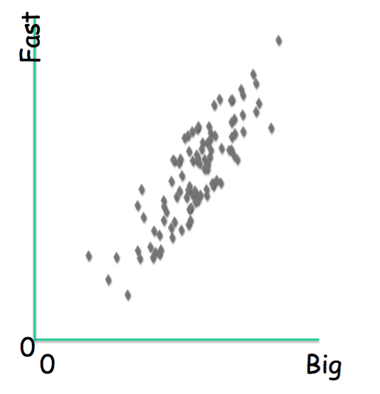
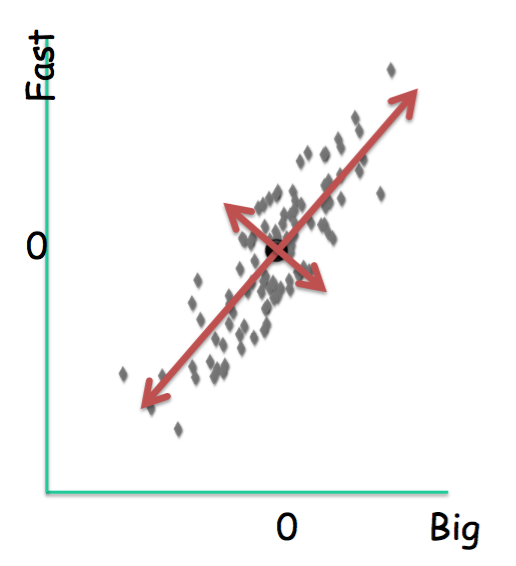
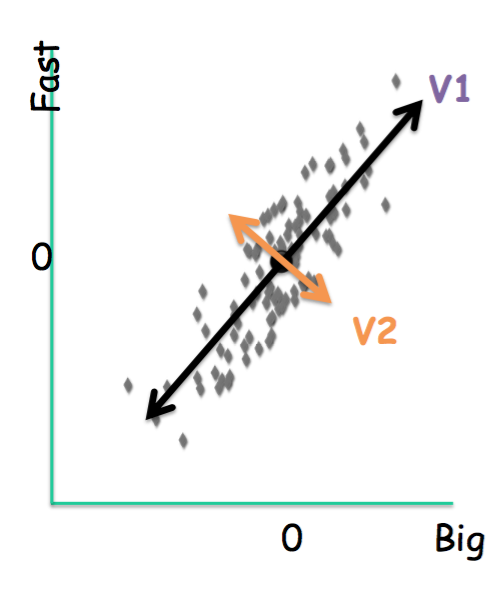
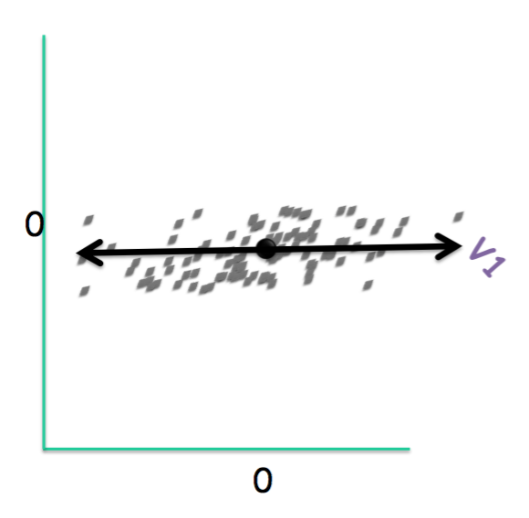
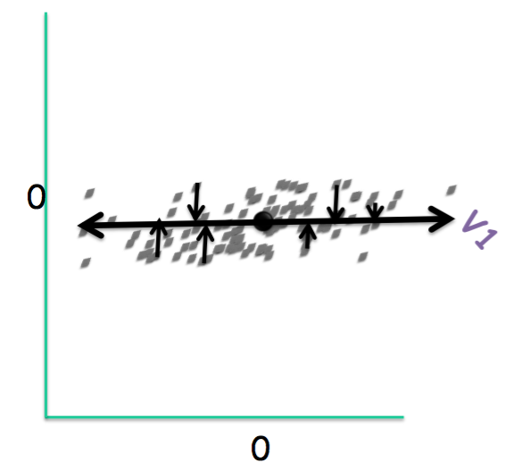
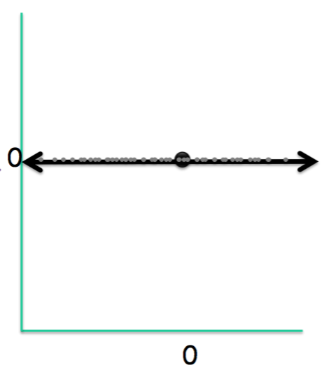

Theory and Knowledge
PCA requires a firm grasp of post-calculus linear algebra, specifically eigenvectors and eigenvalues, projections, bases, and vector spaces.
PCA is one of the oldest solutions to the dimensionality reduction problem. The dimensionality reduction problem refers to the ideal way of dropping dimensions for computational simplicity. Consider a simple two-dimensional dataset. The naive method of reducing dimensions is simply to omit some of the dimensions of the corresponding data matrix. Consider the following 2-d image.

The naive solution would fail in this case, as simply omitting either the x or y values would not preserve the structure of the data. This failing is especially problematic in higher dimensional data. PCA is a more sophisticated solution, and is often the first one taught for this problem.


PCA computes the most meaningful directions of the dataset, called the principal components, and uses them as a basis to re-orient a dataset. Once the dataset is in this new space, we can drop dimensions exactly as we would have in the naive solution-by dropping all values of an axis. The principal components are a set of orthogonal vectors that correspond to the directions of greatest to least variance in the data. Once our data is redefined in component space, we simply drop dimensions that corresponded to directions of least variance. In this way, reducing dimensions minimizes loss of structure compared to the naive method.
If we were to re-orient the same dataset shown above, we would have:

In this new orientation, the dimensions of the data themselves are ranked by informativeness. The new x-axis corresponds to the direction of highest information, the new y-axis corresponds to a perpendicular direction that has the second highest amount of information, which is in our case the same as the direction of least variance. (If our data was three dimensional, the second axis would just be the dimension of middle variance, and we would have a third direction, orthogonal to the first two, that points in the least informative direction.) If we just drop the y-axis from this new dataset, the resulting dimensionality reduction solution will be better than the naive.


PCA works best on data of high redundancy. As you can see, plot a, b, c are all of two-dimensional data. However, in plot a, the variables r1 and r2 seems to be uncorrelated. This state is called low redundancy. In r1 and r2 the data is correlated enough to be efficiently represented in one dimension. This would mean a 50% decrease in storage without any penalty in usefulness. Data that can be, without loss, represented in fewer dimensions are said to have high redundancy.